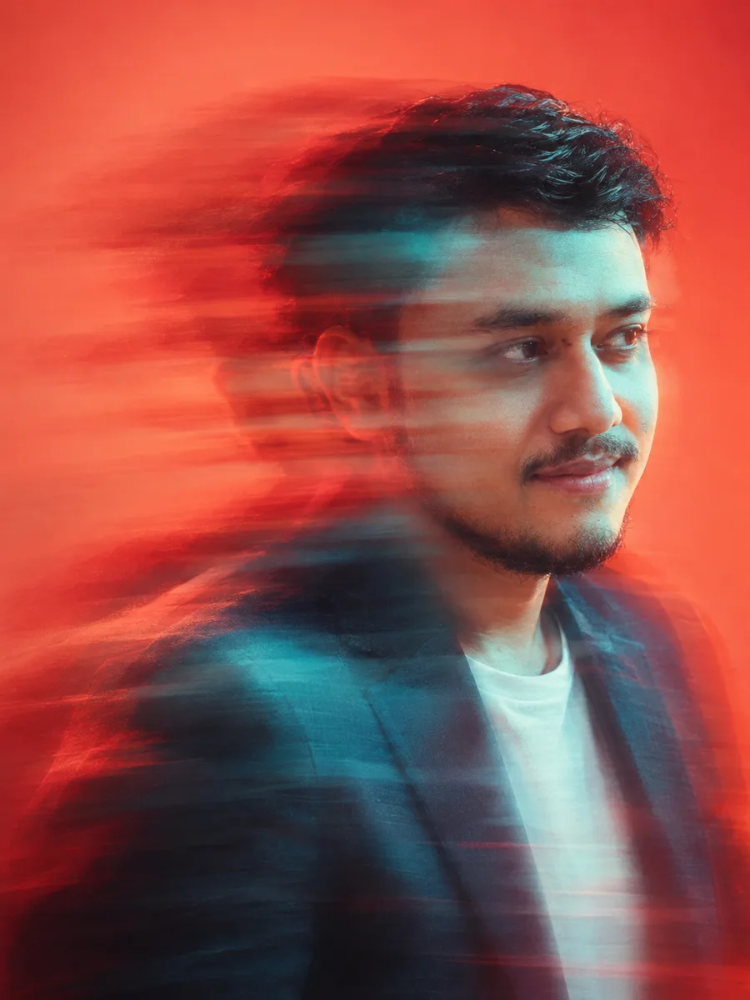
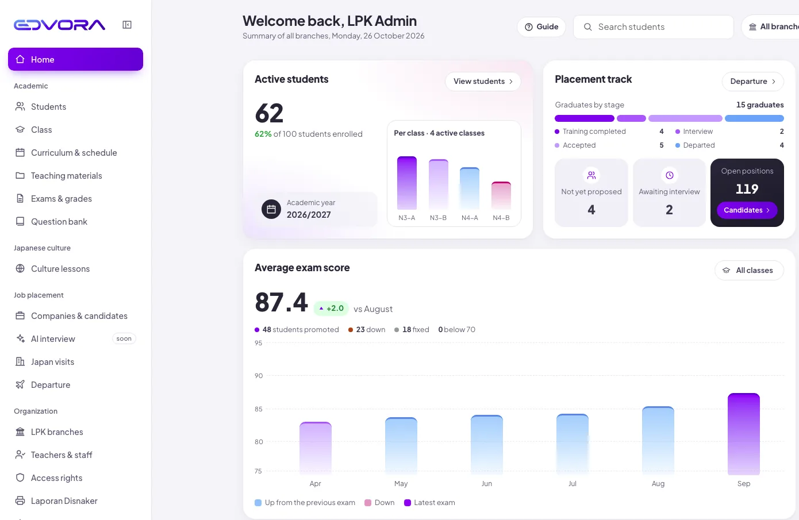
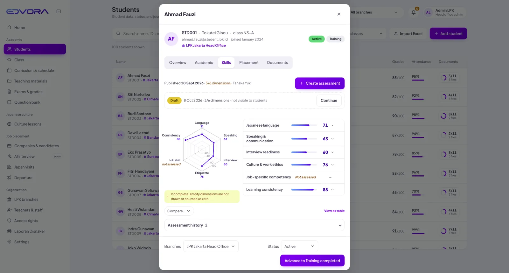
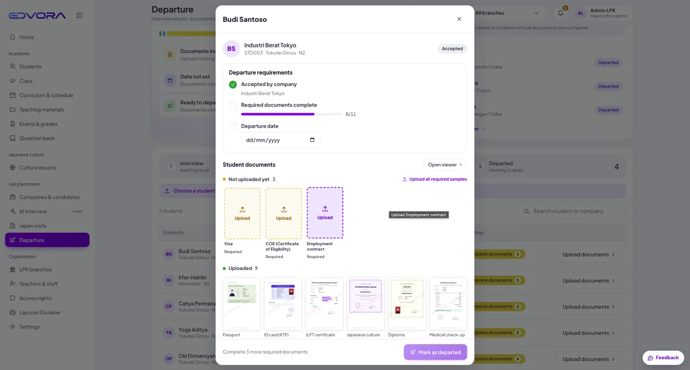
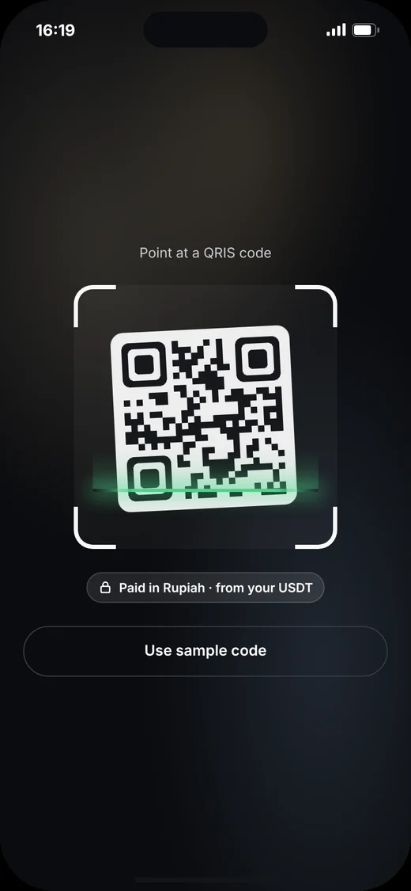
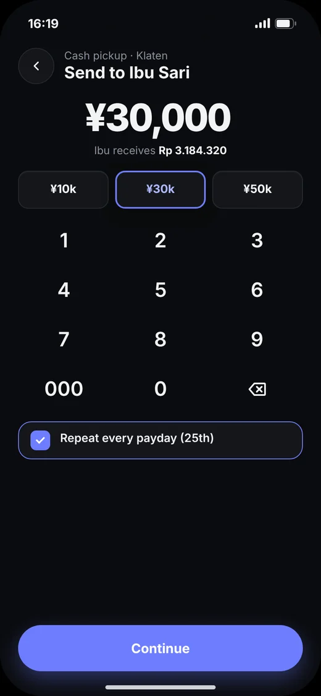
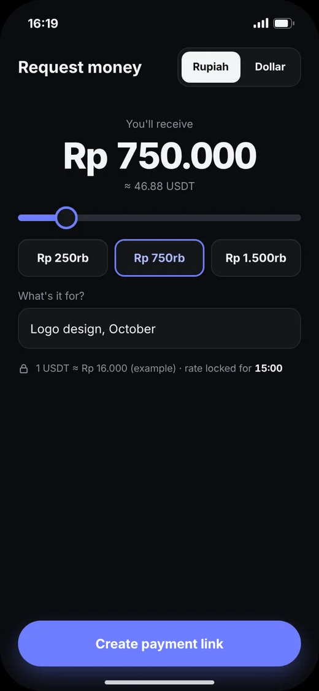

Funnelish AI
A ready sales funnel in minutes instead of waiting months for new templates.
Senior Product Designer with 10+ years in SaaS, ERP, e-commerce and fintech. I design the hard parts, like checkout, dashboards and design systems, and work closely with engineers to ship them.
I started as a graphic designer and spent ten years moving into product design: ERP systems, recruitment platforms, legal tech and e-commerce. I like the messy middle of a product, the long forms, edge cases and dashboards with too much data. Now I'm also building EDVORA, my own SaaS.
Download CV
Remote since 2018From research to a design system engineers can build from.
My own products are public. Company work is under NDA, so those visuals are recreated.
A SaaS that gets every student from Indonesian training centres to Japan on time.
Six clickable concepts for a USDT wallet people in Indonesia can trust.
A ready sales funnel in minutes instead of waiting months for new templates.
One shared library so many teams ship a consistent campus platform.
Helping lawyers spot risky clauses right inside long German contracts.
A redesign that brought 40% more Gen Z sign-ups, plus one talent dashboard.
Small explorations, UI details and visual ideas. Tap any shot to see it larger.
A practical stack for fast, consistent design that survives in code.

Real impact from real projects.
User growth at Funnelish while I redesigned the funnel store and templates.
845 to 3,000+ usersGet in touchProduction quality at SEVIMA after the design system I built.
Figma tokens, code-ready componentsMore Gen Z sign-ups after the Talentvis website redesign.
Recruitment platform, SingaporeWhat teams usually ask before we start working together.
A remote Senior Product Designer role at a product company, full-time or a long-term contract. I do my best work on complex products: SaaS, fintech, e-commerce and data-heavy dashboards.
I'm in GMT+7 and have worked with teams in the UK, Germany and Singapore. I can overlap several hours with Europe or the US East Coast, and I keep async updates clear so nobody waits on me.
That work is under NDA, so the visuals here are recreated. In an interview I walk through the real process, decisions and results live.
I involve them early, share prototypes before high-fidelity, and hand off with every state, token and edge case documented. Then I review the build before release.
Yes. I designed AI features at Funnelish and top.legal, and I use AI tools to build coded prototypes and speed up research synthesis. The design decisions stay mine.
Usually within one to two weeks after we agree.
A SaaS that helps Indonesian training centres (LPK) get every student to Japan on time, instead of chasing documents in chat groups.



Centres track passports, medical checks and visas in spreadsheets and chat groups. One missing document can delay a whole departure.
Six concepts for a USDT wallet that feels safe and useful for everyday people in Indonesia, built as clickable prototypes.



How might store owners get a ready funnel in minutes, instead of waiting for the team to make 100 templates over six months?
Screens are under NDA. I walk through the real work live in an interview.
How might many product teams ship one consistent campus platform?
Screens are under NDA. I walk through the real work live in an interview.
How might lawyers spot risky or one-sided clauses right inside the contract, in a UI built for long German text?
Screens are under NDA. I walk through the real work live in an interview.
How might a recruitment company attract young job seekers, and give five divisions one view of their talent?
Screens are under NDA. I walk through the real work live in an interview.
From the first wireframe to the final handoff, I keep everything in Figma so PMs and engineers can follow along.
I set up colour, spacing and type tokens so one change updates the whole product. I did this at SEVIMA and Funnelish.
I prototype in Figma, and in code when an interaction needs to feel real, like the wallet concepts.
Interviews, behaviour analysis and market mapping. For EDVORA I scored 591 organisations before designing a screen.
I use AI to explore ideas faster, draft UX copy and build quick coded prototypes, then refine everything by hand.
I publish prototypes on GitHub Pages and work in the same repos as engineers when design needs to reach code.